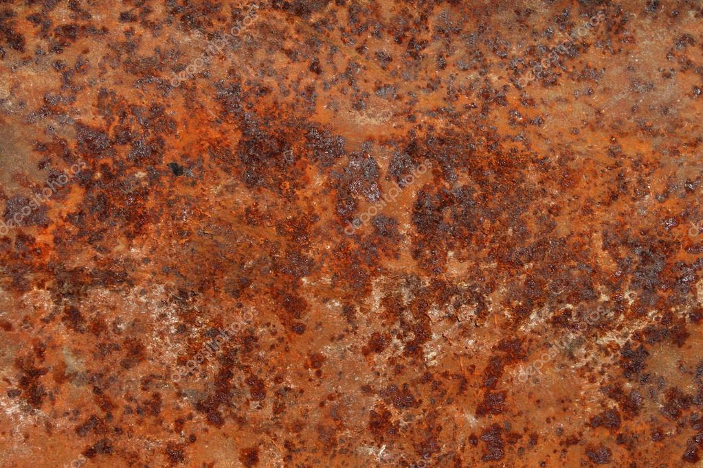
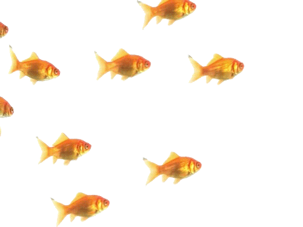
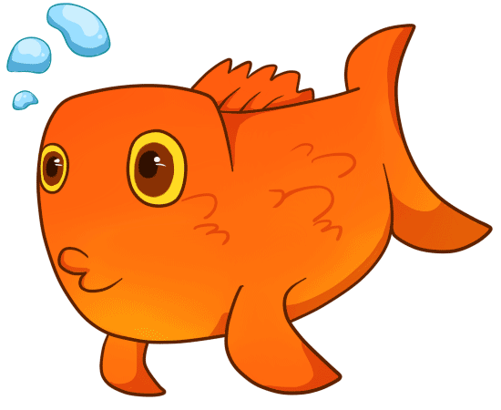
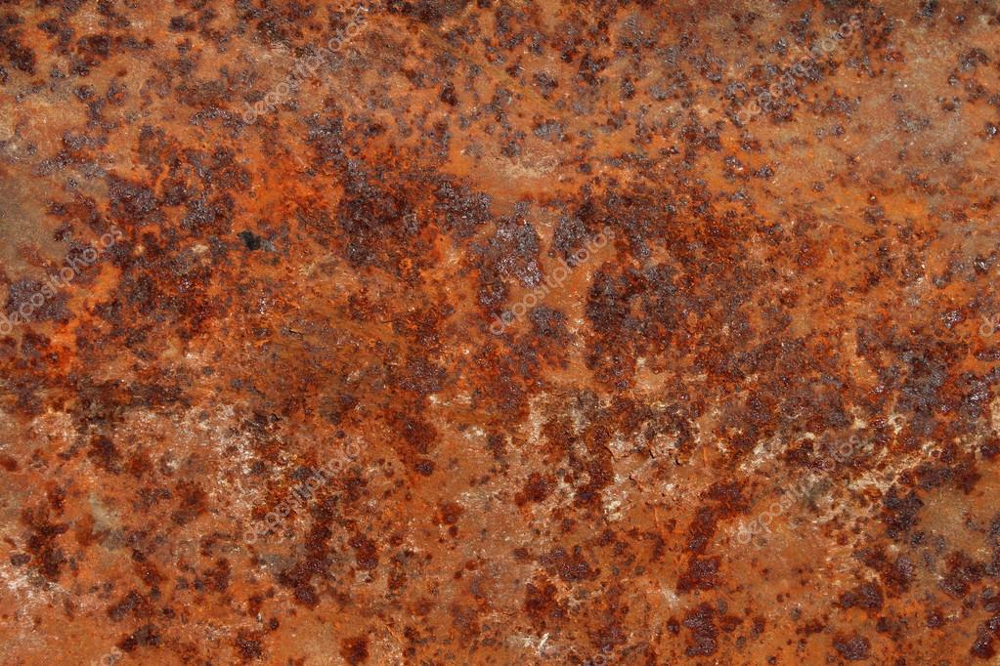
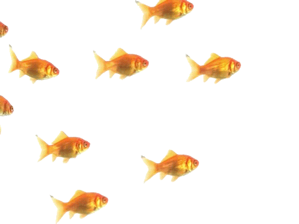
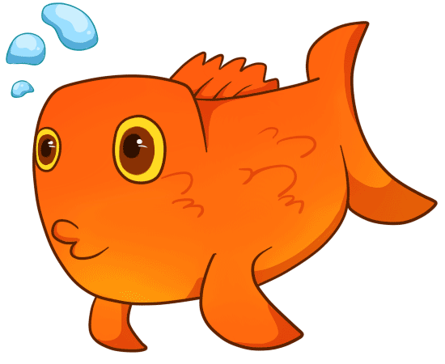

Goldfish Obsession
Code Source: SitePoint.com and w3schools.com
What are goldfish really?
Although many have had a pet goldfish, most do not know much about them.
Introduction
Remember coming home with a goldfish one day? How long did
you think it would live? A few days? Months? With proper
care your goldfish could of lived 20-30 years! The oldest
recorded goldfish lived up to 43 years old. So you may be
thinking: what is the secret? Well, it's no secret and had
you done some research first, you would have spared your
poor goldfish some suffering. Don't feel bad, most, if not
all, goldfish keepers have made the same mistake. In the
following sections, I will outline some information about
goldfish for you.

Tank size and Maintenance
You probably took your goldfish out the bag once you got
home, got some tap water from the sink, and stuffed the
goldfish into a tiny bowl or container that happens to be
nearby. Well, goldfish can grow up to be anywhere from
about 8 inches to 18 inches depending on the breed. You
simply just can't stuff a goldfish into a 8 inch diameter
bowl and hope it will live, it won't. If the goldfish
doesn't die from ammonia and nitrite buildup, it will die
from organs that keep expanding while its body is kept from
growing because of its small environment.
There are main divisions of goldfish:
Fancy and Common(also
known as Comet or Feeder goldfish.
- Fancy goldfish Fancy goldfish need about 20 gallons for
one goldfish and 10 gallons for each additional fish
- Common goldfish Common goldfish need about 30 gallons
for one goldfish and 12 gallons for each additional fish.
Secondly,YOU CANNOT JUST PUT THE GOLDFISH IN TAP
WATER! You must at least have the water sit for a few
days so that chlorine can evaporate or buy a water
dechlorinator. Furthermore, it is best that you cycle the
tank first.Set up the tank as you would if the goldfish was
in it. Then add in some nitrate and ammonia. Test the water
everyday until it shows zero ammonia, zero nitrite, and
some nitrite. This will make sure the beneficial bacteria
in the tank is effective and doing its job. Be sure to make
weekly water changes of about 10% to 50%.

Fiters and Heaters
First of all, I will start with heaters. Heaters are
optional for goldfish since they are capable of surviving
in cold temperatures and will be perfectly fine as long as
the weather does not cause the water to freeze. Heaters are
beneficial in the way they keep the water temperatures from
fluctuating which causes stress to the goldfish. The main
types of filters avaliableavailable in most pet stores:
power filters, canister filters, internal filters,
undergravel filters, wet/dry filters and sponge filters.
Types of Filters
Type
Best for and maintenance level/Brief overview
Function
POWER FILTERS

-beginner
-easy maintenance
-low to medium price$10-$150
Power filters aka hang on the back filters or HOB
filters consist of a pump, filter cartridges/media, and
3 types of filtration. Biological filtration-cartridge
used for growing helpful bacteria. Chemical
filtration-activated carbon cartridge. Mechanical-water
passes through foam material.The cartilages need to be
replaced as needed overtime
CANISTER FILTERS

-better for larger tanks
-$90-500
These filters are best for tanks greater than 40
gallons.These have a siphon tube and flexible pipe work
going to the filter and then a pipe back up and into
the tank with a return �water bar� that spreads the
water outflow through a long bar. The chemical and
mechanical filtration is excellent due to the large
size of the filter and since they are pressurized which
forces the water through fine material that can trap
smaller particles.
UNDERGRAVEL FILTERS

-keeps gravel clean
-$8-$60
These filters are placed under the gravel and they pull
the water through substrate and gravel up uplift tubes.
You must buy an air stone or powerhead in order for
this filter to work!Mechanical filtration is fine,
but chemical filtration and biological filtration are
severely limited due to its design and should be
provided in another way.
INTERNAL FILTERS

-great for small and nano aquariums
-$8-$30
These are used in aquariums smaller than 20
gallons.They do take up room since they are internal
and placed inside the tank.Be careful when reading the
box label; they may require a air pump and airline.
They have suitable chemical, mechanical, and biological
filtration
WET/DRY FILTERS

-a lot of work to set up
-$50-$300
They are excellent in biological filtration since they
are exposed to aquarium water and air which allows
bacteria to grow. Chemical filtration is acceptable,
but mechanical filtration is somewhat limited since the
water passes through large spored sponges. The system
is a lot of work to set up since it includes getting
water pumped directly to your aquarium with a sump or
reservoir to hold auxiliary water and water to run the
pump.
SPONGE FILTERS

-most basic setup
-$5-$40
They are not outstanding in biological, chemical or
mechanical filtration and These are made mostly for
breeding, fry (baby fish) nursery tanks, hospital tanks
and aquariums with small fish or invertebrates.A sponge
filter is powered by an air pump where water is forced
to pull through the sponge-like material. The sponge is
capable of producing biological and mechanical
filtration because beneficial bacteria live on the
sponge.
Feeding
Goldfish do not need to be fed constantly! They are always
"hungry" and will literally eat until they die if you let
them. Feed them about once or twice a day with as much food
as they can consume in 5 minutes. Goldfish are omnivores
and need a variety of food.Goldfish pellets and flakes are
fine, but be careful and do your research! I advise not
buying goldfish food containing wheat or wheat gluten since
goldfish do not eat grain or chicken. Like us, goldfish
need veggies to balance out their diet. Just about any kind
of fibrous veggie will work. Examples include romaine
lettuce, spinach,fruits, and kale.Remember to clean out the
rotting vegetables afterward! Freeze-dried food is also
good.

Diseases

There are several types of goldfish diseases and I will
only cover the most common. They are the following: Ich,
Swim bladder disease, Fin rot, Fungal infection, Velvet,
Anchor worm, Dropsy,and Flukes
Diseases
Symptoms
Cause
ICK

-Spots that resemble grains of salt or white sand on
the skin
-May be slightly raised
- Scratching against
objects due to irritated skin
-Clamped fins
-Gasping
at the water�s surface.
-Usually attacks fish that are stressed, which can be
caused by factors including rapid temperature and pH
fluctuations.
SWIM BLADDER DISEASE

-Fish have a difficult time staying upright and may
hang in the water.
-The main cause of swim bladder is overfeeding, which
leads to constipation. Another cause is gulping air
when they grab food from the surface of the water.
Enlarged organs and infections can also cause swim
bladder disease.
FIN ROT

-A progressive deterioration of the tail and/or fins.
-Fins become frayed or their color may fade
-A bacterial infection may cause tail, fin and mouth
rot in susceptible fish. These incude those who are bullied or
injured by fin-nipping tank mates especially in
aquariums with poor conditions.
FUNGAL INFECTION

-Initially, you�ll notice a gray or whitish growth in
and on the skin and/or fins.
-Untreated fungus
resembles a cottony growth.
- Eventually, as fungus
continues to eat away at the fish�s body, the fish
will die.
-Fish who develop fungus are already in a vulnerable
state, the result of other serious health problems or
attacks, such as parasites, a physical injury or a
bacterial infection.
VELVET

-Velvet looks a lot like ich but velvet shows up as
smaller yellow or gray dusty spots on the fish.
-Velvet disease is a common occurrence in aquariums
that undergo poor maintenance conditions.
DROPSY

-Bloating/ Protruding scales
-A bacterial infection of the kidneys, which causes
fluid accumulation or renal failure. It appears to
create problems only in weakened fish. May stem from
untidy aquarium conditions.
ANCHOR WORM

-Very visible parasite attached to the body of the
fish.
-It will look like a worm hanging off the side
of the fish and leaves a red sore where it's
attached.
-Your fish will try to scratch the parasite
off its body.
-Introduced through other new fish or weakened immune
system
FLUKES

-Infected gills and skin
- Similar to ick, but telltale
sign is movement and possibly eyespots, something
that is not found in ick
-Use magnification lens to
observe
- Once gills are destroyed, fish will die
-Undesirable environmental conditions which including poor
water quality, overcrowding and/or stress by
incompatible species creates conditions that can lead
to destructive outbreaks. Flukes are often present in
aquariums but remain harmless under ideal conditions.
Avoiding stressful conditions is a key to prevention,
but once an outbreak occurs, prompt treatment is
critical.
Should I have a goldfish
Goldfish are wonderful pets and although they probably
sound like a handful now, they are actually less
troublesome than some pets. You do not have to take them
on walks, they will not bark, they will not bite and so
forth. During vacations, you may safely leave them at
home for a few weeks without feeding them and most will
be fine upon your return. They are also very relaxing to
watch and graceful swimmers. However, goldfish do need
all the above mentioned and do get sick. Goldfish
maintenance, tanks, and certain types of goldfish are
expensive and will require some amount of money. It is up
to you about whether you are willing to put in the
effort. Of course it is perfectly legal to keep throwing
your goldfish into an unfiltered, unwholesome and tiny
bowl, but just imagine being locked up in your
bathroom/restroom all the time. Pretty miserable, right?

Choosing a Goldfish
When choosing a goldfish there are certian things you should be aware of in order to find a healthy, active fish.
The following is a good list to keep in mind
- Is the fish active and looking for food? If a goldfish is not eating, there is something wrong!!!
- Are all the fins present, un-frayed at the edges. Clamped fins are a bad sign!
- Are there any red patches on the fins or body? (Hard to see on red or orange colored fish)
- Is there any white cotton wool like patches or pinhead size white spots anywhere on the fish?
- Is the body full and rounded? (Consider the goldfish type you are purchasing. A healthy Comet will be a lot slimmer than a sick Fantail, but the body should still be rounded and smooth, not appearing wasted).
- Is the Goldfish breathing normally, not fast compared to other fish in the aquarium? NO RED GILLS!
- Does the fish�s movement appear effortless or is it labored as if it is struggling to keep buoyant?
- Few if any scales should be missing, and they shouldn't be extended like a pine cone (unless the goldfish is a Pearl Scale).
- Is the fish twitching or scratching against the gravel or aquarium sides?
These are some goldfish types. NOTE:Common Single tailed
and fancy goldfish should not be kept together. The
common goldfish swim more faster and are more aggressive.
They will bully the fancy goldfish and eat all the food.
Goldfish types
Goldfish Types
Type
Description
BLACKMOOR

The Black Moor Goldfish is one of the more rounded or
egg-shaped fancy goldfish. This rounded shape is
enhanced by large bulbous eyes protruding from the
sides of its head and its long, flowing finnage. Its
metallic scales are a deep, velvety black.
BUBBLE EYE

They have large bubbles at the sides of their eyes
and do not have a dorsal fin.Their bubble sacs
develop at 6 to 9 months and get so big the fish
often has difficulty swimming and seeing.
CELESTIAL EYE

The eerie eyes of the Celestial Eye Goldfish are
mounted on the top sides of its head and constantly
gaze upward. This makes it perhaps one of the most
unusual of all the goldfish varieties and it also
does not have a dorsal fin.
FANTAIL

The Fantail Goldfish is one of the more rounded or
egg-shaped fancy goldfish. These fish are bred for
showing. Their main feature, the split tail fin, is
medium in length and slightly forked.
ORANDA

The Oranda Goldfish is one of the most popular
goldfish in the world. It is favored for its hood, a
fleshy growth on the top of its head called the wen.
The wen starts to show at about 3 - 4 months, but
only really begins to form at about 1 - 2 years. The
hood is fully developed when the fish gets to be
about 2-2 1/2 years old.
PEARLSCALE

The Pearlscale is one of the more rounded or
egg-shaped fancy goldfish. They have a straight back
with a swollen belly, resembling a golf ball.
RANCHU

Ranchu Goldfish is one of the more rounded or
egg-shaped fancy goldfish. They lack a dorsal fin and
will develop raspberry head growth.
RYUKIN

The Ryukin Goldfish are easily differentiated from
the Fantail by their extremely high back, which is
often described as a dorsal hump. The hump starts in
the neck region and gives a more pointed appearance
to the Ryukin's head.
TELESCOPE

The eyes are the most curious characteristic of the
Telescope Goldfish. Their large eyes are set on top
of long telescope or cone-like stalks mounted on the
sides of its head. On some individuals, these stalks
can extend out as far as 3/4 of an inch (19 - 20 cm),
but they don't really start to protrude until these
fish are about 6 months old.
VEILTAIL

Veiltail Goldfish have a round body and extremely
long, delicate-looking fins. Their double caudal
(tail) fin and anal fins are well separated. Like the
Fantail, their dorsal fin is held erect, but the
Veiltail Goldfish's dorsal fin is quite long and can
grow to over 2 1/4 inches (6 cm).
COMET

The Comet Goldfish is also called the Comet-tail
Goldfish or Pond Comet. This fish was the first
variety of single-tail goldfish to be developed with
a long caudal (tail) fin.
COMMON

The Common Goldfish is a small member of the
Cyprinidae family of carp fish. These are one of the
hardiest of the goldfish varieties. They are known as
a choice beginner fish for new aquarists because they
are one of the easiest fish to keep.
SHUBUNKIN

The Shubunkin Goldfish are beautiful fish that are
almost always speckled or have a variegated color
pattern. However, what makes the Shubunkin's
appearance unique is not their wild calico
patterning, but their blue color. Blue is a color
that is quite rare in goldfish.
Goldfish Jokes
- What fish do goldfish see when they need an operation?
A sturgeon.

- Where do goldfish keep their money?
In the river bank.
- Why are goldfish easy to weigh?
They bring their own scales.
- What is stranger than seeing a cat fish?
Seeing a goldfish bowl.
- What do fish use for money?
Sand dollars!
- Why don't fish like basketball?
Cause they're afraid of the net 
- How did the fish find the World Wide Web?
In a Net.
- How do you communicate with a fish?
Drop it a line.
- Why are fish so smart?
Because they swim in schools.
- Where do fish sleep?
In a river bed.
- What did the fish say when he posted bail?
I'm off the hook.
- What's the most expensive sort of fish?
The goldfish.
- What do you get when you cross an elephant with a fish?
Swimming trunks
- What's the most musical part of a fish?
The scales!
- Why are goldfish orange?
The water makes them rust!
- Where do fish live?
In Finland
- What do you call a scared fish?
Chicken of the sea.
- What day of the week do fish hate?
Fryday
- How do you make a goldfish old?
Take away the g






Goldfish Quiz
Sources
Here are some extra website links that helped me. Thank
you for reading!
Thanks Goldfish Friend!
What are goldfish really?
Although many have had a pet goldfish, most do not know much about them.
Introduction
Remember coming home with a goldfish one day? How long did you think it would live? A few days? Months? With proper care your goldfish could of lived 20-30 years! The oldest recorded goldfish lived up to 43 years old. So you may be thinking: what is the secret? Well, it's no secret and had you done some research first, you would have spared your poor goldfish some suffering. Don't feel bad, most, if not all, goldfish keepers have made the same mistake. In the following sections, I will outline some information about goldfish for you.
Tank size and Maintenance
You probably took your goldfish out the bag once you got
home, got some tap water from the sink, and stuffed the
goldfish into a tiny bowl or container that happens to be
nearby. Well, goldfish can grow up to be anywhere from
about 8 inches to 18 inches depending on the breed. You
simply just can't stuff a goldfish into a 8 inch diameter
bowl and hope it will live, it won't. If the goldfish
doesn't die from ammonia and nitrite buildup, it will die
from organs that keep expanding while its body is kept from
growing because of its small environment.
There are main divisions of goldfish:
Fancy and Common(also
known as Comet or Feeder goldfish.
- Fancy goldfish Fancy goldfish need about 20 gallons for one goldfish and 10 gallons for each additional fish
- Common goldfish Common goldfish need about 30 gallons for one goldfish and 12 gallons for each additional fish.
Secondly,YOU CANNOT JUST PUT THE GOLDFISH IN TAP WATER! You must at least have the water sit for a few days so that chlorine can evaporate or buy a water dechlorinator. Furthermore, it is best that you cycle the tank first.Set up the tank as you would if the goldfish was in it. Then add in some nitrate and ammonia. Test the water everyday until it shows zero ammonia, zero nitrite, and some nitrite. This will make sure the beneficial bacteria in the tank is effective and doing its job. Be sure to make weekly water changes of about 10% to 50%.
Fiters and Heaters
First of all, I will start with heaters. Heaters are optional for goldfish since they are capable of surviving in cold temperatures and will be perfectly fine as long as the weather does not cause the water to freeze. Heaters are beneficial in the way they keep the water temperatures from fluctuating which causes stress to the goldfish. The main types of filters avaliableavailable in most pet stores: power filters, canister filters, internal filters, undergravel filters, wet/dry filters and sponge filters.
| Types of Filters | ||
|---|---|---|
| Type | Best for and maintenance level/Brief overview | Function |
|
POWER FILTERS
|
-beginner -easy maintenance -low to medium price$10-$150 |
Power filters aka hang on the back filters or HOB filters consist of a pump, filter cartridges/media, and 3 types of filtration. Biological filtration-cartridge used for growing helpful bacteria. Chemical filtration-activated carbon cartridge. Mechanical-water passes through foam material.The cartilages need to be replaced as needed overtime |
|
CANISTER FILTERS
|
-better for larger tanks -$90-500 |
These filters are best for tanks greater than 40 gallons.These have a siphon tube and flexible pipe work going to the filter and then a pipe back up and into the tank with a return �water bar� that spreads the water outflow through a long bar. The chemical and mechanical filtration is excellent due to the large size of the filter and since they are pressurized which forces the water through fine material that can trap smaller particles. |
|
UNDERGRAVEL FILTERS
|
-keeps gravel clean -$8-$60 |
These filters are placed under the gravel and they pull the water through substrate and gravel up uplift tubes. You must buy an air stone or powerhead in order for this filter to work!Mechanical filtration is fine, but chemical filtration and biological filtration are severely limited due to its design and should be provided in another way. |
|
INTERNAL FILTERS
|
-great for small and nano aquariums -$8-$30 |
These are used in aquariums smaller than 20 gallons.They do take up room since they are internal and placed inside the tank.Be careful when reading the box label; they may require a air pump and airline. They have suitable chemical, mechanical, and biological filtration |
|
WET/DRY FILTERS
|
-a lot of work to set up -$50-$300 |
They are excellent in biological filtration since they are exposed to aquarium water and air which allows bacteria to grow. Chemical filtration is acceptable, but mechanical filtration is somewhat limited since the water passes through large spored sponges. The system is a lot of work to set up since it includes getting water pumped directly to your aquarium with a sump or reservoir to hold auxiliary water and water to run the pump. |
|
SPONGE FILTERS
|
-most basic setup -$5-$40 |
They are not outstanding in biological, chemical or mechanical filtration and These are made mostly for breeding, fry (baby fish) nursery tanks, hospital tanks and aquariums with small fish or invertebrates.A sponge filter is powered by an air pump where water is forced to pull through the sponge-like material. The sponge is capable of producing biological and mechanical filtration because beneficial bacteria live on the sponge. |
Feeding
Goldfish do not need to be fed constantly! They are always "hungry" and will literally eat until they die if you let them. Feed them about once or twice a day with as much food as they can consume in 5 minutes. Goldfish are omnivores and need a variety of food.Goldfish pellets and flakes are fine, but be careful and do your research! I advise not buying goldfish food containing wheat or wheat gluten since goldfish do not eat grain or chicken. Like us, goldfish need veggies to balance out their diet. Just about any kind of fibrous veggie will work. Examples include romaine lettuce, spinach,fruits, and kale.Remember to clean out the rotting vegetables afterward! Freeze-dried food is also good.
Diseases
There are several types of goldfish diseases and I will only cover the most common. They are the following: Ich, Swim bladder disease, Fin rot, Fungal infection, Velvet, Anchor worm, Dropsy,and Flukes
| Diseases | Symptoms | Cause |
|---|---|---|
|
ICK
|
-Spots that resemble grains of salt or white sand on
the skin -May be slightly raised - Scratching against objects due to irritated skin -Clamped fins -Gasping at the water�s surface. |
-Usually attacks fish that are stressed, which can be caused by factors including rapid temperature and pH fluctuations. |
|
SWIM BLADDER DISEASE
|
-Fish have a difficult time staying upright and may hang in the water. | -The main cause of swim bladder is overfeeding, which leads to constipation. Another cause is gulping air when they grab food from the surface of the water. Enlarged organs and infections can also cause swim bladder disease. |
|
FIN ROT
|
-A progressive deterioration of the tail and/or fins.
-Fins become frayed or their color may fade |
-A bacterial infection may cause tail, fin and mouth rot in susceptible fish. These incude those who are bullied or injured by fin-nipping tank mates especially in aquariums with poor conditions. |
|
FUNGAL INFECTION
|
-Initially, you�ll notice a gray or whitish growth in
and on the skin and/or fins. -Untreated fungus resembles a cottony growth. - Eventually, as fungus continues to eat away at the fish�s body, the fish will die. |
-Fish who develop fungus are already in a vulnerable state, the result of other serious health problems or attacks, such as parasites, a physical injury or a bacterial infection. |
|
VELVET
|
-Velvet looks a lot like ich but velvet shows up as smaller yellow or gray dusty spots on the fish. | -Velvet disease is a common occurrence in aquariums that undergo poor maintenance conditions. |
|
DROPSY
|
-Bloating/ Protruding scales | -A bacterial infection of the kidneys, which causes fluid accumulation or renal failure. It appears to create problems only in weakened fish. May stem from untidy aquarium conditions. |
|
ANCHOR WORM
|
-Very visible parasite attached to the body of the
fish. -It will look like a worm hanging off the side of the fish and leaves a red sore where it's attached. -Your fish will try to scratch the parasite off its body. |
-Introduced through other new fish or weakened immune system |
FLUKES
|
-Infected gills and skin - Similar to ick, but telltale sign is movement and possibly eyespots, something that is not found in ick -Use magnification lens to observe - Once gills are destroyed, fish will die |
-Undesirable environmental conditions which including poor water quality, overcrowding and/or stress by incompatible species creates conditions that can lead to destructive outbreaks. Flukes are often present in aquariums but remain harmless under ideal conditions. Avoiding stressful conditions is a key to prevention, but once an outbreak occurs, prompt treatment is critical. |
Should I have a goldfish
Goldfish are wonderful pets and although they probably sound like a handful now, they are actually less troublesome than some pets. You do not have to take them on walks, they will not bark, they will not bite and so forth. During vacations, you may safely leave them at home for a few weeks without feeding them and most will be fine upon your return. They are also very relaxing to watch and graceful swimmers. However, goldfish do need all the above mentioned and do get sick. Goldfish maintenance, tanks, and certain types of goldfish are expensive and will require some amount of money. It is up to you about whether you are willing to put in the effort. Of course it is perfectly legal to keep throwing your goldfish into an unfiltered, unwholesome and tiny bowl, but just imagine being locked up in your bathroom/restroom all the time. Pretty miserable, right?
Choosing a Goldfish
When choosing a goldfish there are certian things you should be aware of in order to find a healthy, active fish.
The following is a good list to keep in mind
- Is the fish active and looking for food? If a goldfish is not eating, there is something wrong!!!
- Are all the fins present, un-frayed at the edges. Clamped fins are a bad sign!
- Are there any red patches on the fins or body? (Hard to see on red or orange colored fish)
- Is there any white cotton wool like patches or pinhead size white spots anywhere on the fish?
- Is the body full and rounded? (Consider the goldfish type you are purchasing. A healthy Comet will be a lot slimmer than a sick Fantail, but the body should still be rounded and smooth, not appearing wasted).
- Is the Goldfish breathing normally, not fast compared to other fish in the aquarium? NO RED GILLS!
- Does the fish�s movement appear effortless or is it labored as if it is struggling to keep buoyant?
- Few if any scales should be missing, and they shouldn't be extended like a pine cone (unless the goldfish is a Pearl Scale).
- Is the fish twitching or scratching against the gravel or aquarium sides?
These are some goldfish types. NOTE:Common Single tailed and fancy goldfish should not be kept together. The common goldfish swim more faster and are more aggressive. They will bully the fancy goldfish and eat all the food.
Goldfish types
| Goldfish Types | |
|---|---|
| Type | Description |
|
BLACKMOOR
|
The Black Moor Goldfish is one of the more rounded or egg-shaped fancy goldfish. This rounded shape is enhanced by large bulbous eyes protruding from the sides of its head and its long, flowing finnage. Its metallic scales are a deep, velvety black. |
|
BUBBLE EYE
|
They have large bubbles at the sides of their eyes and do not have a dorsal fin.Their bubble sacs develop at 6 to 9 months and get so big the fish often has difficulty swimming and seeing. |
|
CELESTIAL EYE
|
The eerie eyes of the Celestial Eye Goldfish are mounted on the top sides of its head and constantly gaze upward. This makes it perhaps one of the most unusual of all the goldfish varieties and it also does not have a dorsal fin. |
|
FANTAIL
|
The Fantail Goldfish is one of the more rounded or egg-shaped fancy goldfish. These fish are bred for showing. Their main feature, the split tail fin, is medium in length and slightly forked. |
|
ORANDA
|
The Oranda Goldfish is one of the most popular goldfish in the world. It is favored for its hood, a fleshy growth on the top of its head called the wen. The wen starts to show at about 3 - 4 months, but only really begins to form at about 1 - 2 years. The hood is fully developed when the fish gets to be about 2-2 1/2 years old. |
|
PEARLSCALE
|
The Pearlscale is one of the more rounded or egg-shaped fancy goldfish. They have a straight back with a swollen belly, resembling a golf ball. |
|
RANCHU
|
Ranchu Goldfish is one of the more rounded or egg-shaped fancy goldfish. They lack a dorsal fin and will develop raspberry head growth. |
|
RYUKIN
|
The Ryukin Goldfish are easily differentiated from the Fantail by their extremely high back, which is often described as a dorsal hump. The hump starts in the neck region and gives a more pointed appearance to the Ryukin's head. |
|
TELESCOPE
|
The eyes are the most curious characteristic of the Telescope Goldfish. Their large eyes are set on top of long telescope or cone-like stalks mounted on the sides of its head. On some individuals, these stalks can extend out as far as 3/4 of an inch (19 - 20 cm), but they don't really start to protrude until these fish are about 6 months old. |
|
VEILTAIL
|
Veiltail Goldfish have a round body and extremely long, delicate-looking fins. Their double caudal (tail) fin and anal fins are well separated. Like the Fantail, their dorsal fin is held erect, but the Veiltail Goldfish's dorsal fin is quite long and can grow to over 2 1/4 inches (6 cm). |
|
COMET
|
The Comet Goldfish is also called the Comet-tail Goldfish or Pond Comet. This fish was the first variety of single-tail goldfish to be developed with a long caudal (tail) fin. |
|
COMMON
|
The Common Goldfish is a small member of the Cyprinidae family of carp fish. These are one of the hardiest of the goldfish varieties. They are known as a choice beginner fish for new aquarists because they are one of the easiest fish to keep. |
|
SHUBUNKIN
|
The Shubunkin Goldfish are beautiful fish that are almost always speckled or have a variegated color pattern. However, what makes the Shubunkin's appearance unique is not their wild calico patterning, but their blue color. Blue is a color that is quite rare in goldfish. |
Goldfish Jokes
- What fish do goldfish see when they need an operation?
A sturgeon. - Where do goldfish keep their money?
In the river bank. - Why are goldfish easy to weigh?
They bring their own scales. - What is stranger than seeing a cat fish?
Seeing a goldfish bowl. - What do fish use for money?
Sand dollars! - Why don't fish like basketball?
Cause they're afraid of the net - How did the fish find the World Wide Web?
In a Net. - How do you communicate with a fish?
Drop it a line. - Why are fish so smart?
Because they swim in schools. - Where do fish sleep?
In a river bed. - What did the fish say when he posted bail?
I'm off the hook. - What's the most expensive sort of fish?
The goldfish. - What do you get when you cross an elephant with a fish?
Swimming trunks - What's the most musical part of a fish?
The scales! - Why are goldfish orange?
The water makes them rust! - Where do fish live?
In Finland - What do you call a scared fish?
Chicken of the sea. - What day of the week do fish hate?
Fryday - How do you make a goldfish old?
Take away the g


Goldfish Quiz
Sources
Here are some extra website links that helped me. Thank you for reading!